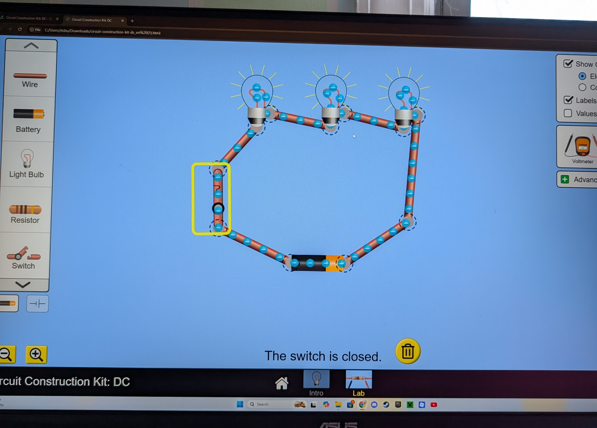

What This Stage Was About
In this stage, my student used the PhET Circuit Construction Kit to explore circuits in a digital space before building anything physically. This simulation let him drag, drop, connect, and test components instantly, which helped him see how electricity behaves without worrying about wires, batteries, or incorrect connections.
The PhET environment gave him the freedom to experiment safely — trying out switches, bulbs, resistors, and different circuit layouts. Because the simulator responds immediately, he could make predictions, test them, and revise his thinking on the spot. This built a strong conceptual foundation before moving into hands‑on building.
He continued using the digital notebook to take notes, sketch circuit ideas, and record predictions and results.
Lesson Plan
Digital Tools We Used
PhET Circuit Construction Kit PICRAT: Active–Transformation
Used to build and test virtual circuits.
Digital Notebook PICRAT: Passive–Replacement
Used to record observations and predictions.
Student Artifacts




What We Did
- built simple and complex circuits
- tested switches, resistors, and LEDs
- made predictions before running simulations
- compared digital results with real‑world expectations
My Reflection
This lesson showed me how helpful the PhET simulator was in making circuit behavior more visible and intuitive. My student was able to build and test both series and parallel circuits, and I could see him using the electron‑flow visuals to check his thinking and adjust his wiring. He stayed engaged, made predictions, and corrected mistakes with growing independence, which told me he was really processing what he saw on the screen.
There were a few moments where he needed to work through challenges, especially when using components like the resistor or when his wiring wasn’t quite right. Instead of getting stuck, he used those moments to troubleshoot, which strengthened his understanding. By the end of the lesson, he showed strong readiness for the hands‑on Snap Circuits work, both in his confidence and in his grasp of basic circuit rules.
Student Reflection
“In the PhET simulator, I built different circuits by connecting wires, bulbs, and batteries, and I tried both series and parallel setups. I learned how the electrons move faster or slower depending on the voltage, which helped me understand what’s really happening inside a circuit. When I made predictions, most of them made sense once I tested them, and seeing the electrons move on the screen helped me understand the results.
Some parts were tricky at first, like figuring out how to use the resistor, but I eventually got it to work. The simulator also helped me picture what real circuits look like, like the inside of a light switch or a circuit box. I’m still curious about what other components exist and whether there are more types of circuits besides series and parallel. After using the simulator, I feel very confident about building real circuits next.”
ISTE Standards Addressed
1.1 Empowered Learner
The student used the PhET simulation to explore circuits at their own pace—adding components, adjusting variables, and testing ideas—building confidence and independence in using digital tools to learn scientific concepts.
1.4 Innovative Designer
The student designed and modified circuits within the simulation, using trial‑and‑error, iteration, and troubleshooting to solve problems such as why a bulb wouldn’t light or how to fix a broken series string.
1.5 Computational Thinker
The student analyzed how each component affected the circuit, broke problems into smaller parts, and used the simulation to model system behavior and test predictions about current flow, brightness, and circuit structure.
1.6 Creative Communicator
The student communicated their understanding by explaining circuit behavior using diagrams, screenshots, and verbal reasoning, clearly describing how their design choices affected the outcome.